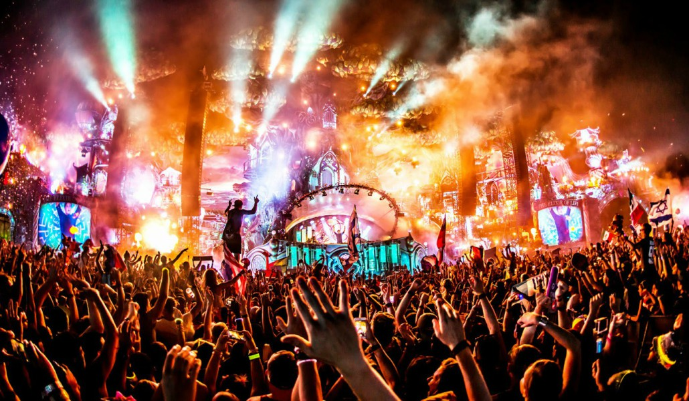

Tipos de Festivales
- Festival de Musica 
- Festival de Cine
- Festival de Teatro
- Festival de Esport

Programación escénica, habitualmente estructurada entorno a un género determinado, de duración limitada y que habitualmente se exhibe en varios espacios
Cada festival está centrado a un público en concreto, que vibra con un tipo de música en particular. Pero una cosa está clara: si quieres escuchar todos los temazos que llevas bailando en la discoteca durante el año, este es tu sitio. A quienes acompañará Morad, Dani Fernández, Ptazeta, Álvaro de Luna, Lali Espósito o Juancho Marqués. No hay nombre en este cartel que no te suene.
Los que ya han acudido a este festival con Aranda de Duero como ubicación saben que se trata de una verbena de pueblo. Pero a lo grande y cambiando las míticas orquestas por bandas líderes de la industria musical nacional, como La La Love You, La Pegatina o Amaral. Vetusta Morla y Arde Bogotá también tendrán su sitio junto a Leo Rizzi o Marc Seguí, entre otros. Además, si lo tuyo es dormir bajo las estrellas, Sonorama Ribera dispone de un camping al que puedes acceder por sólo 20 euros más tras haber adquirido tu abono. Además, puedes hacerlo de manera sostenible...
Durante los días 30 de Junio y 1 de julio Conexión Valladolid celebrará su próxima edición en la Antigua Hípica (Pinar de Antequera). Después de sus grandes ediciones que fueron todo un éxito, el festival vuelve un año más lleno de energía para ofrecer a los vallisoletanos y todo el que le guste disfrutar de la buena música indie y pop, 2 días llenos de conciertos para acabar junio a lo grande. Han pasado por el festival artistas como Kase O, Macaco, Lola Índigo, Viva Suecia, Novedades Carminha, Stay Homas, Alice Wonder y Arde Bogotá. Los primer cabezas de cartel que han confirmado son Natos y Waor.
Premio de la Academia, también conocidos como premio Oscar, un exclusivo evento de alfombra roja, reúne a las estrellas de cine más brillantes, millones de fans y medios de comunicación emocionados, y asigna miles de millones de espectadores a sus televisores en todo el mundo. El evento en sí cuenta con 24 nominaciones para méritos artísticos y técnicos en la industria cinematográfica estadounidense. Los premios son otorgados por la Academy of Motion Picture Arts and Sciences (AMPAS). Los ganadores de cada categoría reciben la copia de una estatua dorada: el Oscar.
La Semana Internacional de Cine de Valladolid (Seminci) es una muestra cinematográfica celebrada en la ciudad española de Valladolid, que ha ido evolucionando desde su creación en 1956 como Semana de Cine Religioso de Valladolid realizada durante la Semana Santa, hasta convertirse en uno de los principales festivales de cine internacional de España, destacando en el área del cine de autor e independiente. Las películas a mostrar eran seleccionadas ya entonces siguiendo criterios de calidad y no de cantidad, aunque eso supusiera tener un número insuficiente de filmaciones. El Teatro Calderón es la sede principal del evento, y acoge las galas de inauguración, clausura y entrega de premios, además de varios pases de la sección oficial; el resto de proyecciones y secciones tienen lugar en diversos cines y salas de la ciudad.
Los Premios Goya, Premios Anuales de la Academia o simplemente Los Goya, como son conocidos popularmente, son los galardones otorgados de forma anual por la Academia de las Artes y las Ciencias Cinematográficas de España, con la finalidad de premiar a los mejores profesionales en cada una de las distintas especialidades del cine español. El premio consiste en un busto de Francisco de Goya realizado en bronce por el escultor José Luis Fernández. La ceremonia de entrega de los premios tiene lugar entre los últimos días de enero y primeros de febrero y sigue el formato de los Premios Óscar.